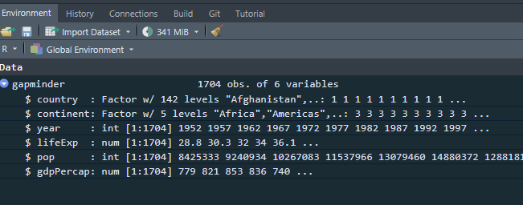
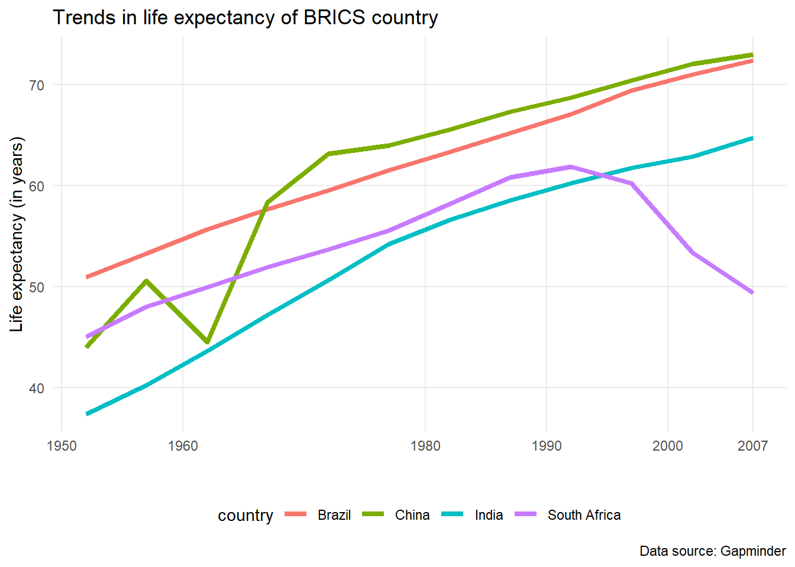
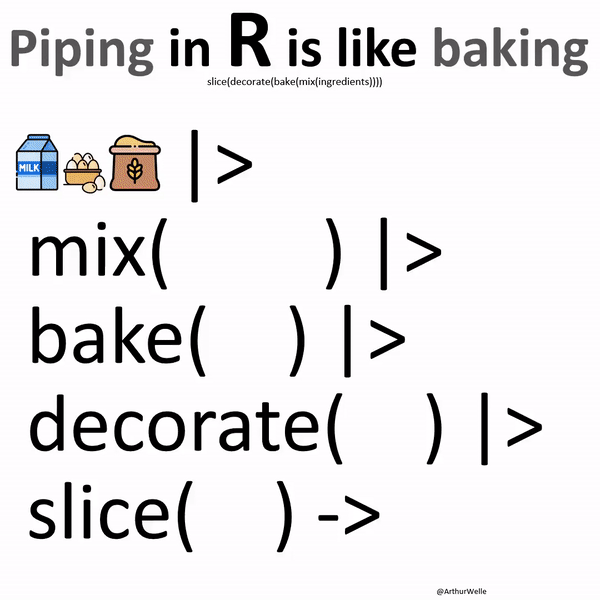

Dataframes, as we saw the previous section, is a tabular data format, with columns and rows. Columns are variable names and rows are individual observations.
Let us a basic data frame with three columns: country, life expectancy, and population of Southern African countries. First, we create individual vectors:
# Create a character vectorcountry_name <-c("Angola", "Botswana", "Lesotho", "Malawi", "Mozambique", "Namibia", "South Africa", "Swaziland", "Zambia", "Zimbabwe")country_name
Because we have 3 vectors of equal length, we can create a dataframe, using a data.frame() function:
southern_africa_df <-data.frame(country_name, life_expectancy, population) #combine two vectors to create a dataframesouthern_africa_df ## print the dataframe
A dataframe is basically made of vectors (columns). In the southern_africa_df dataframe, we have 3 columns: country_name, life_expectancypopulation. We can extract these elements using the $ sign:
We will use the dplyr package to manipulate data. dplyr is part of tidyverse meta-package and is mostly used to clean, manipulate and transform dataframes. dplyr has 5 main verbs/functions:
select(): for selecting particular columns in a dataframe
filter(): for sub-setting rows based on the specified criteria
arrange(): sort rows/observations based (ascending/descending)
summarise(): for summary statistics
mutate(): create new columns based on the manipulation of the existing columns.
group_by(): get aggregate statistics by a category
library(dplyr)
Attaching package: 'dplyr'
The following objects are masked from 'package:stats':
filter, lag
The following objects are masked from 'package:base':
intersect, setdiff, setequal, union
You can also load dplyr by loading the tidyverse package; this will load all the packages in in `tidyverse at once. This is useful, for example, when you want to clean and visualise data:
Now you have an object, which is a dataframe, called gapminder, you can see it in the Environment pane in RStudio. It shows that it has ncol(gapminder) columns/variables and nrow(gapminder) observations/rows

gapminder dataframe in Environment pane
You can use the str() fucntion to get the structure of the dataframe:
You can get a sample of the first observations/rows using head() function:
head(gapminder)
# A tibble: 6 × 6
country continent year lifeExp pop gdpPercap
<chr> <chr> <int> <dbl> <int> <dbl>
1 Afghanistan Asia 1952 28.8 8425333 779.
2 Afghanistan Asia 1957 30.3 9240934 821.
3 Afghanistan Asia 1962 32.0 10267083 853.
4 Afghanistan Asia 1967 34.0 11537966 836.
5 Afghanistan Asia 1972 36.1 13079460 740.
6 Afghanistan Asia 1977 38.4 14880372 786.
4.1.4 select() function
We may be interested in some of the columns in the gampminder dataframe, let say, for example, “country” and “pop” variables and discard others; we use the select() function:
Then using the select() function to select only pop and country columns
You will that pipe becomes important when having multiple chains of functions at once.
You will notice that in other sources: web, books, etc. have %>% instead of |>. It works the same way. The |> is new. %>% comes from mgttr, an external package, so you needed to load it first before using it. The native pipe |> is built in R, so it there is no need to load it. So, we will stick with the |>.
In your RStudio, follow these instructions:
Go to ‘Tools’ and click on ‘Global Options’
Navigate to ‘Code’ on the left pane
Then select the fourth option, “use native pipe operator, |>”
Click ‘Apply’
You can use the short cut Ctrl + Shift + M If you using Windows to insert the pipe instead of typing it. If you are using Mac, use Cmd + Shift + M.
4.1.4 Return to select() function
As I have said, select() only return the columns specified
Also, notice that we selected “country’ and”pop” columns but did not save them and assigned to an object. To store the results into an object, we have to use assignment operator (<-):
Now we have saved results as gapminder_selected, and we can do other analysis with this object because we have saved it. So, in a nutshell, when you run a code without assigning results into an object, using the <- operator, results will not be saved but will be printed.
You can also select columns based by index/position. Let us select only 1st and 3rd coulmns
# A tibble: 1,704 × 3
country continent year
<chr> <chr> <int>
1 Afghanistan Asia 1952
2 Afghanistan Asia 1957
3 Afghanistan Asia 1962
4 Afghanistan Asia 1967
5 Afghanistan Asia 1972
6 Afghanistan Asia 1977
7 Afghanistan Asia 1982
8 Afghanistan Asia 1987
9 Afghanistan Asia 1992
10 Afghanistan Asia 1997
# ℹ 1,694 more rows
Here, we have select columns from country to year only.
You can also exclude certain columns by simply adding the minus (-) sign; let say we want to exclude the gdpPercap from the dataframe
gapminder |>select(-gdpPercap)
# A tibble: 1,704 × 5
country continent year lifeExp pop
<chr> <chr> <int> <dbl> <int>
1 Afghanistan Asia 1952 28.8 8425333
2 Afghanistan Asia 1957 30.3 9240934
3 Afghanistan Asia 1962 32.0 10267083
4 Afghanistan Asia 1967 34.0 11537966
5 Afghanistan Asia 1972 36.1 13079460
6 Afghanistan Asia 1977 38.4 14880372
7 Afghanistan Asia 1982 39.9 12881816
8 Afghanistan Asia 1987 40.8 13867957
9 Afghanistan Asia 1992 41.7 16317921
10 Afghanistan Asia 1997 41.8 22227415
# ℹ 1,694 more rows
4.1.5 filter() function
You may be interested in observations/rows that meet certain conditions. We use filter() function to return the list that meet our conditions. filter() has several operators:
==: equal to
!=: not equal to
>: greater than
<: less than
>=: greater than or equal to
<=: less than or equal to
Let us filter based on the continent column. How many continent are there? Create a basic table first
table(gapminder$continent)
Africa Americas Asia Europe Oceania
624 300 396 360 24
There are five continents. Let us filter only observations from the African continent:
# A tibble: 624 × 6
country continent year lifeExp pop gdpPercap
<chr> <chr> <int> <dbl> <int> <dbl>
1 Algeria Africa 1952 43.1 9279525 2449.
2 Algeria Africa 1957 45.7 10270856 3014.
3 Algeria Africa 1962 48.3 11000948 2551.
4 Algeria Africa 1967 51.4 12760499 3247.
5 Algeria Africa 1972 54.5 14760787 4183.
6 Algeria Africa 1977 58.0 17152804 4910.
7 Algeria Africa 1982 61.4 20033753 5745.
8 Algeria Africa 1987 65.8 23254956 5681.
9 Algeria Africa 1992 67.7 26298373 5023.
10 Algeria Africa 1997 69.2 29072015 4797.
# ℹ 614 more rows
africa_gapminder object is a dataframe we have just created, with only countries from the African continent. What filter() does is to return observations/rows that only meet our conditions:
Let us filter a numeric column; for example, we may want to filter countries with population of above 50 million and assign results to an object named high_pop:
# A tibble: 1,020 × 6
country continent year lifeExp pop gdpPercap
<chr> <chr> <int> <dbl> <int> <dbl>
1 Afghanistan Asia 1952 28.8 8425333 779.
2 Afghanistan Asia 1957 30.3 9240934 821.
3 Afghanistan Asia 1962 32.0 10267083 853.
4 Afghanistan Asia 1967 34.0 11537966 836.
5 Afghanistan Asia 1972 36.1 13079460 740.
6 Afghanistan Asia 1977 38.4 14880372 786.
7 Afghanistan Asia 1982 39.9 12881816 978.
8 Afghanistan Asia 1987 40.8 13867957 852.
9 Afghanistan Asia 1992 41.7 16317921 649.
10 Afghanistan Asia 1997 41.8 22227415 635.
# ℹ 1,010 more rows
Sometimes you may need to filter multiple rows, let say, more than 5 countries. It would be inconvinient to type country == "..." five times. This is where the %in% operator is useful:
# A tibble: 5 × 6
country continent year lifeExp pop gdpPercap
<chr> <chr> <int> <dbl> <int> <dbl>
1 Ghana Africa 2007 60.0 22873338 1328.
2 South Africa Africa 2007 49.3 43997828 9270.
3 Tanzania Africa 2007 52.5 38139640 1107.
4 Tunisia Africa 2007 73.9 10276158 7093.
5 Zimbabwe Africa 2007 43.5 12311143 470.
4.1.6 arrange() function
arrange() function is self-explanatory: it sort values into ascending or descending order
africa_2007 |>arrange(lifeExp) |>head(n =10) ## show the first 10 observations
# A tibble: 10 × 6
country continent year lifeExp pop gdpPercap
<chr> <chr> <int> <dbl> <int> <dbl>
1 Swaziland Africa 2007 39.6 1133066 4513.
2 Mozambique Africa 2007 42.1 19951656 824.
3 Zambia Africa 2007 42.4 11746035 1271.
4 Sierra Leone Africa 2007 42.6 6144562 863.
5 Lesotho Africa 2007 42.6 2012649 1569.
6 Angola Africa 2007 42.7 12420476 4797.
7 Zimbabwe Africa 2007 43.5 12311143 470.
8 Central African Republic Africa 2007 44.7 4369038 706.
9 Liberia Africa 2007 45.7 3193942 415.
10 Rwanda Africa 2007 46.2 8860588 863.
The default sorting is ascending order; you can sort into descending order by using desc() function within arrange():
africa_2007 |>arrange(desc(lifeExp)) |>head(n =10) ## show the first 10 observations
# A tibble: 10 × 6
country continent year lifeExp pop gdpPercap
<chr> <chr> <int> <dbl> <int> <dbl>
1 Reunion Africa 2007 76.4 798094 7670.
2 Libya Africa 2007 74.0 6036914 12057.
3 Tunisia Africa 2007 73.9 10276158 7093.
4 Mauritius Africa 2007 72.8 1250882 10957.
5 Algeria Africa 2007 72.3 33333216 6223.
6 Egypt Africa 2007 71.3 80264543 5581.
7 Morocco Africa 2007 71.2 33757175 3820.
8 Sao Tome and Principe Africa 2007 65.5 199579 1598.
9 Comoros Africa 2007 65.2 710960 986.
10 Mauritania Africa 2007 64.2 3270065 1803.
4.1.7 summarise()
We use the summarise() function to get the summary statistics. Common statistics include mean, median, standard deviation, minimum, maximum, etc.
In many instances we are interested in aggregate statistics, that is, summary statistics by a category. Say you want to group rows by the continent column then get the use summarise() to get average GDP per capita for each continent. This is where the group() function is useful:
## First create a dataframe of the year 2007 onlygapminder_2007 <- gapminder |>filter(year ==2007)## Then use group_by()gapminder_2007 |>group_by(continent) |>summarise(gdp_continent =mean(gdpPercap)) |>arrange(desc(gdp_continent)) ## arrange by gdp_continent into descending
# A tibble: 5 × 2
continent gdp_continent
<chr> <dbl>
1 Oceania 29810.
2 Europe 25054.
3 Asia 12473.
4 Americas 11003.
5 Africa 3089.
4.1.9 Create columns with mutate()
mutate create new columns based on the existing columns. In most cases we want to transform the data. For example, we know that the GDP per capita is calculated from dividing the total GDP by a population. We may want to create a new column named gdp_total with a formula (gdp_total = gdpPercap * pop). We can use mutate():
You can take it even further by creating a plot. You know that BRICS countries are Brazil, Russia, India, China and South Africa. You want to find trends in life expectancy. Note that there is no data for Russia
gapminder |>filter(country %in%c("Brazil", "Russia", "India", "China", "South Africa")) |>select(country, year, lifeExp) |>ggplot(aes(x = year, y = lifeExp, colour = country)) +geom_line(linewidth =1.5) +theme_minimal() +scale_x_continuous(breaks =c(1950, 1960, 1980, 1990, 2000, 2007)) +theme(legend.position ="bottom",panel.grid.minor =element_blank()) +labs(title ="Trends in life expectancy of BRICS country",x ="",y ="Life expectancy (in years)",caption ="Data source: Gapminder")

Wait a minute: why did south Africa’s life expectancy started to decline rapidly from the 1990s? One plausible reason would be the impact of HIV/AIDS and lack of antiretrovirals (ARVs). Welcome to data analysis.
You can see above the efficiency of the pipe operator. Think of the pipe operator as:
OR

We have introduced to the basics of data manipulation in R using the dplyr package in R. While we have covered a lot, the path is long. However, once you master these basic functions, you will not struggle in the following sections. These resources may be helpful: